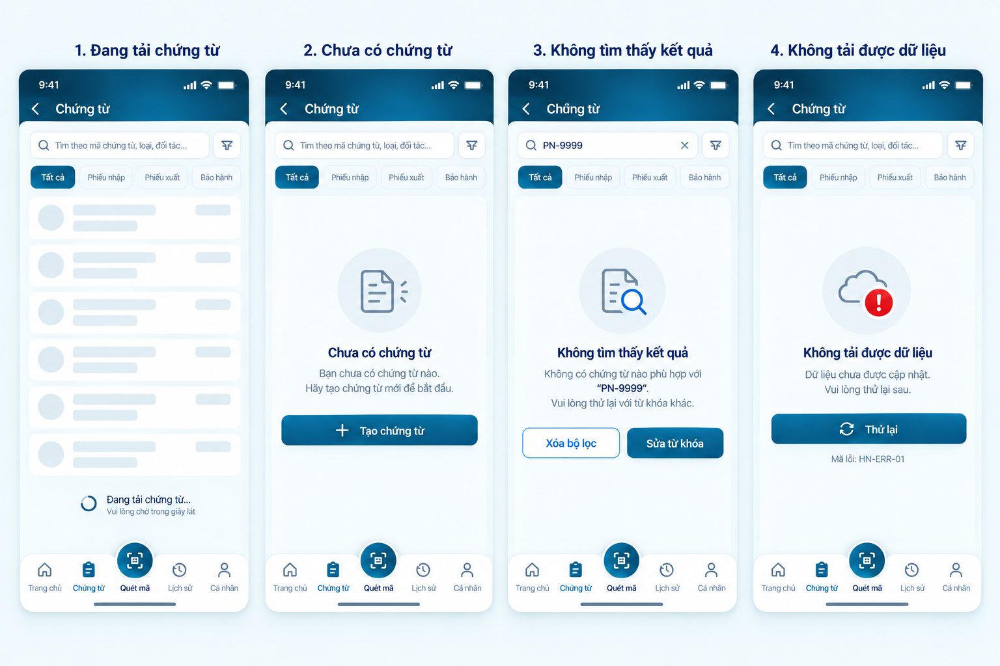
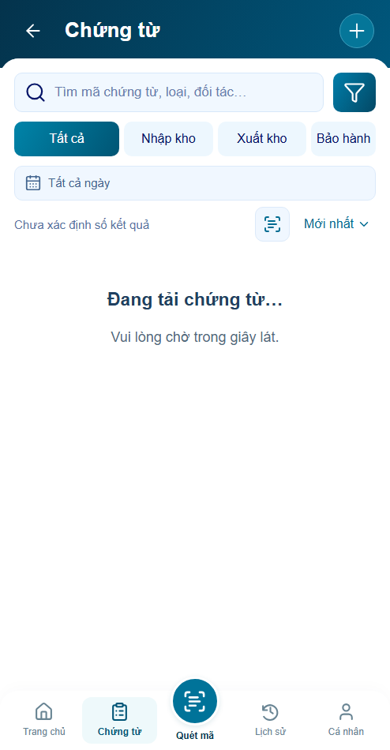
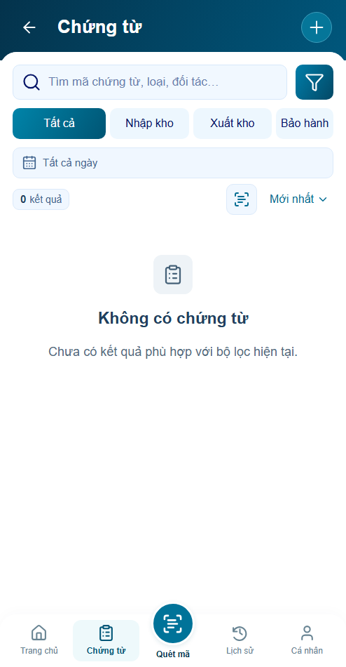
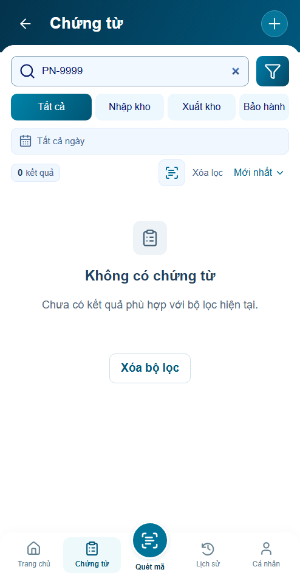
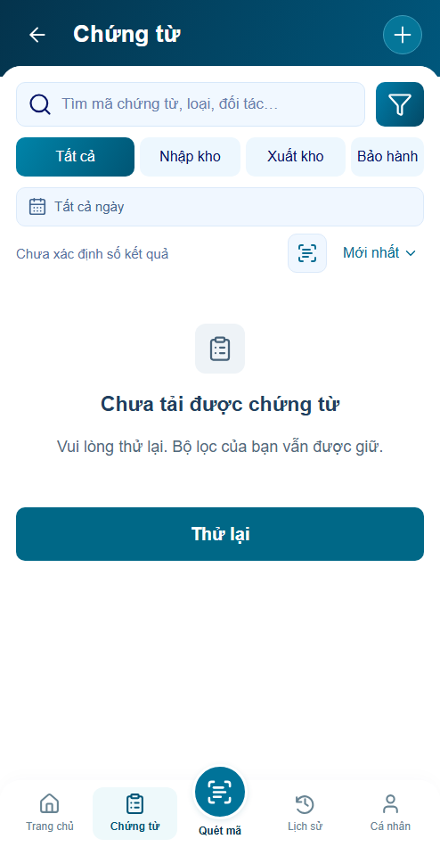

P16 · Trạng thái dữ liệu · r01
4/4 panel triển khai trong Chứng từ P12. Visual chờ review · Behavior PASS prototype · Integration chưa xác minh production.
Mở ứng dụng · Báo cáo · Nguồn và số đo · Acceptance
Đăng nhập minhanh / preview → xác nhận phiên → Chứng từ → bộ chọn P16 ở ngoài khung app.
Giữ shell494×950, footer đã khóa và controls P12 hiện hành (ngày/count/sort). Glyph nét từ source hiện có; bố cục này cần user review. Không dùng số test để xác nhận khớp raster.
Baseline B16 nguyên vẹn
SHA256 trùng blob tại HEAD; tỷ lệ raster khác khung CSS đã khóa. Không kéo méo baseline để so sánh.

Trước–sau cùng viewport494×950, DPR1, zoom1
P16.S01 · Đang tải chứng từ
Trước P16 · state cũ của P12
Sau P16 r01 P16.S02 · Chưa có chứng từ
Trước P16 · state cũ của P12
Sau P16 r01 P16.S03 · Không tìm thấy kết quả
Trước P16 · state cũ của P12
Sau P16 r01 P16.S04 · Không tải được dữ liệu
Trước P16 · state cũ của P12
Sau P16 r01